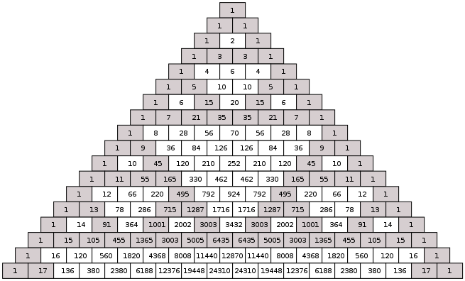

Pascal's Triangle
In mathematics, Pascal's triangle is a triangular array of the binomial coefficients. In the Western world, it is named after French mathematician Blaise Pascal, although other mathematicians studied it centuries before him in India,[1] Persia (Iran), China, Germany, and Italy.[2] The rows of Pascal's triangle are conventionally enumerated starting with row n = 0 at the top (the 0th row). The entries in each row are numbered from the left beginning with k = 0 and are usually staggered relative to the numbers in the adjacent rows. The triangle may be constructed in the following manner: In row 0 (the topmost row), there is a unique nonzero entry 1. Each entry of each subsequent row is constructed by adding the number above and to the left with the number above and to the right, treating blank entries as 0. For example, the initial number in the first (or any other) row is 1 (the sum of 0 and 1), whereas the numbers 1 and 3 in the third row are added to produce the number 4 in the fourth row. The entry in the nth row and kth column of Pascal's triangle is denoted . For example, the unique nonzero entry in the topmost row is . With this notation, the construction of the previous paragraph may be written as follows:
When we color the odd and even numbers in Pascal's triangle with two different colors, we observe an interesting recursive pattern that resembles Sierpinski's triangle. The more rows we consider, the more accurate the resemblance is. More generally, numbers in Pascal's triangle can be colored differently according to whether or not they are divisible by 3[4], 4[5],5[6] etc.; this results in similar patterns.
